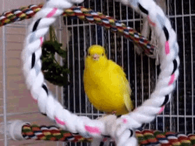

L'art est ce qui nous sépare des animaux, c'est pourquoi il est si important pour CANARY
Welcome to Canary Info Website
Join the army
Is the best thing you can ever do
Las nuevas zapatillas de Naik
Las nuevas zapas son una pasada porque se amoldan a tu pie y son rojas
J'adore les canaris
Ce sont des oiseaux très ennuyeux.
Invitations
Click here to get yours -->CALL TO ARTIST - NEW ARTIST NEEDED
Ecceomo est la meilleure œuvre jamais créée
Je vendrais des pois chiches sur une place juste pour voyager voir de l'eczéma, c'est tellement merveilleux
Tira de mi tete
The best thing Ive ever done!
I still remember when I bought a giant bucket of chicken at KFC, which was delicious. It reminded me of the canary that died when I was little.